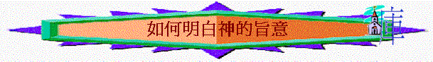

[ Home ] [ 經卷課程 ] [ 查經資料 ] [ 栽培課程 ] [ 事奉培訓 ] [ 聚會資源 ] [ 佈道資源 ] [ 胸懷普世 ] [ 異端異教 ] [ 信息分享 ] [ 專題研究 ] [ 祈禱專題 ] [ 詩歌簡譜 ] [ 動畫之廊 ] [ 輔導關懷 ] [ 站長聯絡 ]
目的:
用直接講授形式, 探討關乎如何明白神旨意, 每堂時間約45MINS
認識神的旨意之定義 明白神的旨意之方法 明白神的旨意之實例 尋求神的旨意之榜樣
Word 版
free web counter